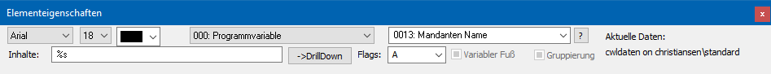
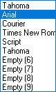
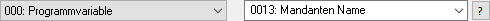
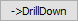
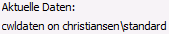

Die Buttonleiste "Elementeigenschaften" wird standardmäßig angezeigt und kann über das Menü "Anzeige" (Punkt "Elementeigenschaften" -> ein Formular muss zur Bearbeitung geöffnet sein) aktiviert bzw. deaktiviert werden.

In Abhängigkeit des markierten Elements im Formular stehen folgende Funktionen zur Verfügung:
Ø Schriftart und Farbe
Mit Hilfe dieser Einstellungen kann die Schriftart, die Schriftgröße und die Farbe definiert werden.
Hinweis 1
Handelt es sich bei dem Element um einen RTF-Text, dann bestimmt die Formatierung des Textes selber die Darstellung.
Hinweis 2
Die zur Verfügung stehenden Schriftarten, Schriftgrößen und Farben werden im Programm CWLCTK definiert. Sollte nicht alle der 10 möglichen Schriftarten definiert sein, so werden diese mit dem Eintrag "Empty" angezeigt.

Ø

VariableÜber die Auswahllisten kann die View (d.h. die SQL-Tabelle)
und die Variable (d.h. die SQL-Spalte in einer Tabelle) bestimmt werden, welche
ausgegeben werden soll. Mit Hilfe des Icons  kann das Fenster "Variable suchen"
geöffnet werden. In diesem ist es möglich per Volltextsuche nach Variablen zu
suchen.
kann das Fenster "Variable suchen"
geöffnet werden. In diesem ist es möglich per Volltextsuche nach Variablen zu
suchen.
Ø Inhalte
Im Feld "Inhalte" wird in Abhängigkeit des Typs des Elements der Text oder die Formatierung der Variable angezeigt.
Beispiele
ü %s - Text Variable
ü %s{W:15} - Text Variable mit Längenbeschränkung
ü %s,40 - Text Variable mit Zeilenumbruch
ü ###,###.## - Numerische Variable mit 2 Nachkommastellen
ü ANGEBOT - Text Element mit dem Text "ANGEBOT"
ü AUX MAIL; - Steuerelement für den Mailversand
ü {[0/190] * [21/63]} - Formelelement ohne Scriptsprache
Ø

DrillDownDiese Funktion erzeugt für das gewählte Element eine Verknüpfungsfunktion (Hyperlink) zu einer weiterführenden Aktion. Das DrillDown-Element wird hierbei im Anschluss farblich gesondert dargestellt und unterstrichen.
Ø Flags
An dieser Stelle kann dem Element ein Flag zugeordnet werden, wobei die Eingabe des Flags manuell erfolgen muss. Flags dienen WinLine zur Drucksteuerung, d.h. wann soll welche Information ausgewiesen bzw. welche Aktion durchgeführt werden. Weiterführende Informationen entnehmen Sie bitte dem Kapitel "Buttons und Funktionen im Detail".
Ø Variabler Fuß
Wenn diese Option aktiviert ist, wird der Fußteil entsprechend der Höhe des Mittelteils nach oben angeglichen. Ist diese Option nicht aktiviert, bleibt der Fußteil an der fixierten Position. Dieses Attribut kann nur bei einem Fußteilelement gesetzt werden.
Beispiel
Bei einem Beleg, der nur eine Belegzeile im Mittelteil hat, wird der Fußteil bei aktiviertem "variablen Fußteil" nach oben unter die letzte Belegzeile gezogen. Bleibt die Funktion deaktiviert, wird die Fußzeile fix am unteren eingestellten Rand angedruckt.
Ø Gruppierung
Mit dieser Option können mehrere Elemente gruppiert bzw. zusammengefasst werden. Gruppierte Elemente werden im Formular gelb dargestellt. Damit können folgende Anforderungen gelöst werden:
ü Elemente können gemeinsam positioniert werden. Wenn eine Gruppe aktiviert wird und z.B. verschoben wird, dann werden immer alle Elemente dieser Gruppe verschoben - oder es kann für alle Elemente der Gruppe eine andere Schriftart vergeben werden.
ü Damit kann der Ausdruck von Leerzeilen gesteuert werden (Postanschrift). Abhängig davon, ob in der Variable ein Wert enthalten ist oder nicht, wird die entsprechende Zeile angedruckt. Bleibt eine Variable leer, wird die nachfolgende Variable angeschlossen (es gibt keine Leerzeile).
Ø

Aktuellen DatenAn dieser Stelle wird die aktuelle Mandantendatenbank angezeigt.